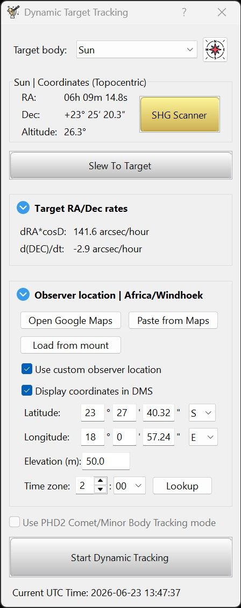
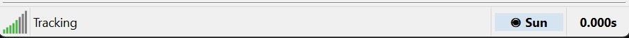

Dynamic Target Tracking is a HelioMaker tool that updates the mount tracking rate in real time for supported solar-system targets. It can be used with major bodies such as the Sun, Moon, and planets, and with generated ephemeris plans for comets, asteroids, moons, and other natural minor solar-system bodies. For beginners, the main idea is simple: telescope mounts usually use one of the standard built-in tracking rates, such as sidereal, solar, or lunar. Dynamic Target Tracking goes beyond those static rates by continually updating the mount rate to follow the actual motion of the selected target throughout the session, using computational models that account for the observer location, current time, and selected target.
As a premium feature, Dynamic Target Tracking is available only after HelioMaker has been activated. Before activation, the Dynamic Tracking button remains visible in the dialog, but it is disabled.
Full Dynamic Target Tracking depends on mount support for custom RA/Dec tracking rates. If the connected mount does not support custom tracking rates, HelioMaker falls back to the best legacy mount tracking rate for the selected major target, such as solar, lunar, or sidereal. For generated comet and minor-object ephemeris plans, HelioMaker can instead use PHD2 comet tool mode and fully automate it by applying the comet or minor-object drift rate in real time. For details, see Mount Compatibility for Dynamic Tracking.
In this context, dynamic tracking does not mean guiding or any other closed-loop tracking method. It refers only to applying a real-time target tracking rate computed by HelioMaker from the target ephemeris model. With the introduction of Dynamic Target Tracking, HelioMaker effectively provides a two-layered correction model: first, it selects and applies the proper tracking model for the chosen target using this tool; second, PHD2 continues issuing guiding corrections based on the object's detected position, with detection performed by HelioMaker.
The tool started as an enhancement for lunar and solar guiding, where replacing static lunar or solar mount rates with a target-specific rate can reduce drift and improve calibration or polar-alignment measurements. It remains very useful for those workflows, especially for lunar imaging, where the Moon's apparent motion changes enough that a simple static lunar rate is often only an approximation.
With the Ephemeris Planner, Dynamic Target Tracking also becomes useful for comet, asteroid, moon, and minor-body tracking and guiding. A generated plan can be loaded into DTT so HelioMaker can compute the object's changing apparent motion, slew or help center the target, apply custom tracking rates when the mount supports them, or automate the PHD2 comet-tool fallback when custom mount rates are not available.
For comet, asteroid, or other minor-body imaging, once the planned object is centered and Dynamic Target Tracking is active, the user can keep using an existing capture workflow while PHD2 guides on the surrounding star field. HelioMaker continues updating the object drift rate in the background using the cadence selected in the Ephemeris Planner. SharpCap does not need to be connected for this workflow when PHD2 is using a physical guiding camera and the user prefers another imaging application.
In practice, this tool is simple to use because HelioMaker performs all required calculations behind the scenes. The main prerequisites are to make sure the local date, time, and time zone on the PC are correct, and that the observer location stored in the mount is as accurate as possible, including elevation. When these values are set correctly, they improve the accuracy of the computed tracking rate for every target type, including lunar, solar, planetary, comet, asteroid, and other planned minor-body workflows.

Before starting Dynamic Target Tracking, point the telescope at the desired target, make sure the mount is already tracking, and center the target in the field of view as accurately as possible. The tool can slew the mount to supported targets when target and mount state allow it, but the operation must be supervised and the target should still be verified in the camera view before dynamic tracking starts.
This means the correct target must already be on screen and the mount must already be tracking before you enable dynamic tracking. Once centered, the selected target can be chosen in the dialog and Start Dynamic Tracking can be used to enable the custom rate.
If the button is disabled, verify that HelioMaker has already been activated and that the mount has not stopped. If the mount is not tracking, the Start Dynamic Tracking button remains disabled.
The Slew To Target button can command the mount to move to the selected supported target when HelioMaker has enough target, observer-location, and mount information. This is useful for initial target acquisition before final framing and focusing.
Slewing is a physical mount operation and must be supervised. Watch for pier collision risk, cable tension, horizon limits, meridian behavior, and any other mount-specific safety issue. If a slew must be stopped immediately, use the available cancel/stop control for the slew operation. For more details, see Slew to Target and Safety.
Dynamic Target Tracking depends on the observer location used for the target ephemeris calculation. For best accuracy, it is recommended to keep the telescope's stored mount location synchronized with the actual physical geographical location of the telescope.
The dialog also allows a manual override for entering a custom observer location. This feature is intended only for minor adjustments or small corrections when needed.
If the mount is not reasonably well synchronized with its real physical location, Dynamic Target Tracking may not produce accurate results. In such cases, correcting the mount's stored site information is preferable to relying on large manual overrides in HelioMaker.
This observer location also supports Sun/Moon cloud monitoring, even when dynamic tracking is not running. When selecting Sun or Moon in Sequence Options, verify the observer location and time zone here and check the PC's date, time and time-zone settings. See Observed Target and Cloud Monitoring.
The dialog lets you select the target body and displays the current tracking information used by HelioMaker to compute the dynamic mount rate. It is intended to make it easy to confirm the selected target and start or stop dynamic tracking mode when needed.
Use the Target body control to select the solar system object for which HelioMaker should compute the dynamic tracking rate.
The Ephemeris Planner button next to Target body opens the Ephemeris Planner for supported natural solar-system objects. Use it to create or load a plan for comets, asteroids, planets, moons, and other minor-body targets, then return to DTT with the selected plan ready for centering, slewing, tracking, or PHD2 comet-tool fallback.
While dynamic tracking is active, HelioMaker continues refreshing the applied tracking rate in real time based on the current ephemeris data for the selected target.
After you click Start Dynamic Tracking, the dialog can be closed or minimized. HelioMaker will continue updating the mount tracking rate in real time in the background until the dialog is opened again and Stop Dynamic Tracking is used.
This allows you to enable dynamic tracking, confirm that the rate has been applied, and then continue with the rest of your workflow without keeping the dialog open.
While Dynamic Target Tracking is driving the mount, the HelioMaker status line alternates between two states, about two seconds apart, so that a glance at it tells you tracking is live rather than merely configured:

The glyph appears only while dynamic tracking is actually driving the mount. That is a different fact from the Dynamic Target Tracking window being open, which is what the toolbar button reflects. When Dynamic Target Tracking is not in use, the same field reflects one of the standard mount tracking modes, such as sidereal, lunar, or solar tracking.
The same glyph also marks the Start Dynamic Tracking button. It is shown only when the mount genuinely supports custom tracking rates; a mount that can only take one of its standard built-in rates gets the standard-rate wording instead, and no glyph, because what it offers is not dynamic tracking.
Some mounts may require inversion of the RA tracking-rate sign when using Dynamic Target Tracking. This option can be controlled in HelioMaker's PHD2 configuration dialog using the Invert RA rate for Dynamic Tracking checkbox shown below.

If applying a dynamic rate results in excessive target drift, this may indicate that RA rate reversal is required for your mount. In that case, try toggling this checkbox and then click Start Dynamic Tracking again.
In general, the normal unchecked state should work with many high-end mounts, but the correct setting ultimately depends on how the mount interprets the ASCOM RA rate polarity.
If enabling Dynamic Target Tracking causes excessive drift instead of improving stability, please refer to the FAQ entry Why does the target drift excessively after enabling Dynamic Target Tracking?.